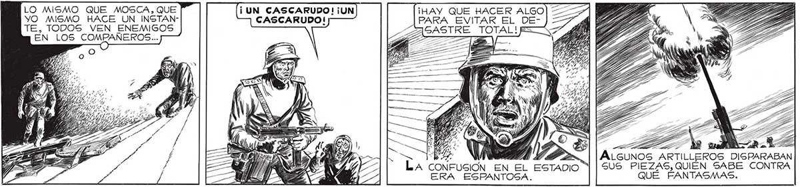
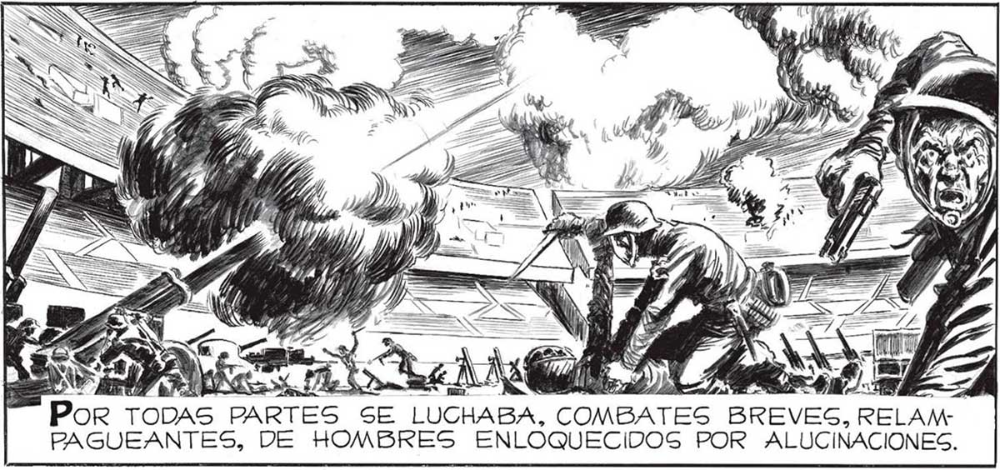
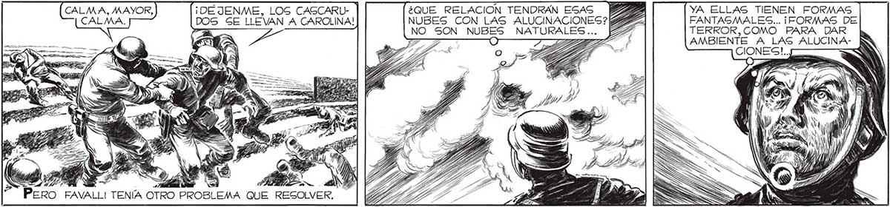

THAY QUE HACER ALGO PARA EVITAR EL DEGASTRE TOTAL!ES A 130 LO MISMO QUE MOSCA, QUE ¡UN CASCARUDO! ¡UN YO MISMO HACE UN INSTAN- CASCARUDO! TE, TODOS VEN ENEMIGOS EN LOS e a LA 4 ÁLGUNOS ARTILLEROS DISPARABAN A CONFUSION EN EL ESTADIO | | SUS PIEZAS, QUIÉN SABE CONTRA ERA ESPANTOSA. QUE FANTASMAS. ¡UNOS MINUTOS MAS, Y NOS HABREMOS EXTERMINADO f ¿COMO, CON QUÉ CONSIGUEN ELLOS Pz PRODUCIR LAS ALUCINACIONES? [É e UNOS CONTRA OTROS Sl ENCONTRARA A FAVALLI.. ÉL SAS QUIZA ENCONTRARA LA SOLUCION... O => Pe A > a - > We 4 ” as | ) bo d : = Y d Se ; = ; E Gs , Wa os e Es 7 = A ps AÑ 2 4 ' a Pa p S a A de , ] 7 A A «A Por ¡DEJENME, LOGS CASCARU- ¿QUE RELACION TENDRAN ESAS [2323 YA ELLAS TIENEN FORMAS DOS SE LLEVAN A CAROLINA! NUBES CON LAS ALUCINACIONES? [22332 FANTAGMALES... ¡FORMAS DE NO SON NUBES NATURALES... a TERROR,COMO PARA DAR 7 , Zo AMBIENTE A LAS ALUCINACALMA, MAYOR, CALMA. 24 3 . Y ' » 5 E Y x E aa: FAVALLI TENÍA OTRO PROBLEMA QUE RESOLVER. ”* PERO


